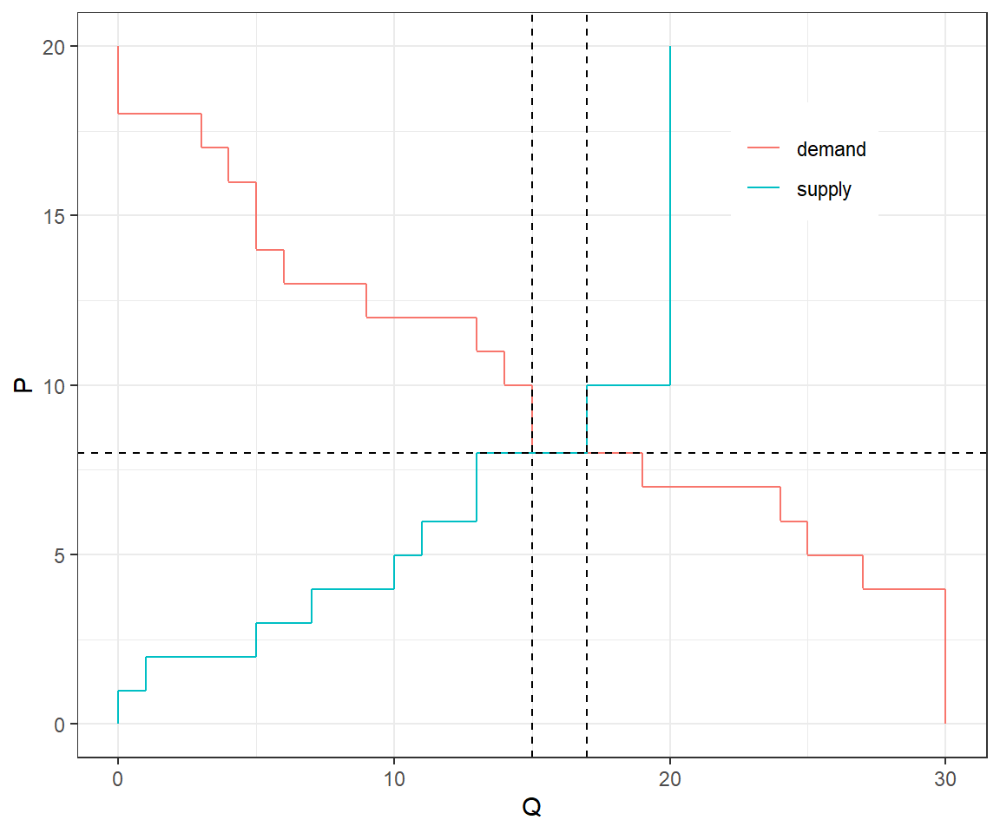

2 Markets
2.1 Markets
Probably one of the first things you learned about in a Principles of Microeconomics course
A group of buyers, each with values for purchasing items
- Implies a downward-sloping demand curve
A group of sellers, each with costs of selling item
- Implies an upward-sloping supply curve
This is enough to calculate the equilibrium price and quantity
However: * One cannot just ask buyers what there values are * One cannot just ask sellers what their values are
(why not?)
2.2 An experiment
…
2.3 Induced value theory
Simple version: Pay people enough money, and they will behave as if these are their incentives
More formally, if for a participant in an experiment: * taking action \(a\) results in payment $A * taking action \(b\) results in payment $B
Then they will only choose action \(a\) if \(A \geq B\), and will only choose action \(b\) if \(B\geq A\).
Caveats: \(A\) and \(B\) need to be large enough that participants pay attention to them (salience)
- Don’t pay in Monopoly money, chocolate, etc
- Maintain assumption that participants don’t care about the earnings of others (selfishness)
- Participants need to understand how their actions lead to payments
- Participants need to believe that their actions will lead to payments
2.4 In market experiments
- Each buyer \(i\) has values \(v_{i,1}\geq v_{i,2}\geq v_{i,3} \ldots\).
- Each seller \(j\) has costs \(c_{i,1}\leq c_{i,2}\leq c_{i,3} \ldots\).
- If buyer \(i\) buys from seller \(j\) at price \(p\):
- Buyer \(i\) earns \(\$ v_{i,1}-p\)
- Seller \(j\) earns \(\$ p-c_{j,1}\)
(if this is the first trade for both)
2.5 Numerical example - Buyers
There are 10 buyers, each buyer has a value equal to a 15-sided die roll plus 3, and can buy at most 3 items:
set.seed(42)
nBuyers<-10
nItems<-3
Demand<-data.frame()
for (bb in 1:nBuyers) {
# value for that individual buyer
v<-sample(1:15,nItems,replace=T)+3
tmp<-data.frame(v)
tmp$BuyerID<-bb
Demand<-rbind(Demand,tmp)
}
plt<-(
ggplot(data=Demand,aes(x=v))+geom_histogram(bins=10)
+theme_bw()
+xlab("Values")
+ylab("count")
)
2.6 Numerical example - Sellers
There are 20 sellers, each seller has a cost equal to a 10-sided die roll, and can sell at most 2 items:
nSellers<-10
nItems<-2
Supply<-data.frame()
for (ss in 1:nSellers) {
# value for that individual buyer
c<-sample(1:10,nItems,replace=T)
tmp<-data.frame(c)
tmp$SellerID<-ss
Supply<-rbind(Supply,tmp)
}
plt<-(
ggplot(data=Supply,aes(x=c))+geom_histogram(bins=10)
+theme_bw()
+xlab("Costs")
+ylab("count")
)
2.7 Numerical example - Supply and demand curves
P<-seq(0,20,length=1000) # prices to evaluate quantity
SF<-function(p) {
sum(Supply$c<=p)
}
DF<-function(p) {
sum(Demand$v>=p)
}
SupplyDemand<-data.frame()
for (pp in P) {
p<-pp
Q<-DF(pp)
type="demand"
SupplyDemand<-rbind(SupplyDemand,data.frame(p,Q,type))
Q<-SF(pp)
type="supply"
SupplyDemand<-rbind(SupplyDemand,data.frame(p,Q,type))
}
plt<-(ggplot(data=SupplyDemand,aes(x=Q,y=p,color=type))
+geom_path()+theme_bw()
+xlab("Q")+ylab("P")
+theme(legend.title = element_blank(),
legend.position=c(0.8,0.8))
)
2.8 Point predictions from markets
- Equilibrium price and quantity
- Which buyers trade?
- Which sellers trade?
- Consumer and producer surplus
ExcessDemand<-apply(as.matrix(P),
FUN = function(x) {DF(x)-SF(x)},
MARGIN=1)
Peq<-P[which.min(abs(ExcessDemand))]
Qeq<-c(DF(Peq),SF(Peq))
# equilibrium price
print(Peq)## [1] 8.008008# equilibrium quantity
print(Qeq)## [1] 15 172.9 Point predictions
plt<-(plt
+geom_hline(yintercept=Peq,
color="black",
linetype="dashed")
+geom_vline(xintercept=Qeq,
color="black",
linetype="dashed")
)
CS<-sum((Demand %>% filter(v>=Peq))$v)
print(CS)## [1] 209PS<-sum((Supply %>% filter(c<=Peq))$c)
print(PS)## [1] 76
2.10 Comparative static predictions
What happens to any of the above if?
- Supply or demand shift?
- The government imposes a tax?
- The government subsidizes the good?
- The government imposes a price floor or ceiling?
2.11 Other take-aways
- Market theory remains silent on how buyers and sellers discover the equilibrium price
- Market theory remains silent on whether different trading mechanisms affect price discovery.